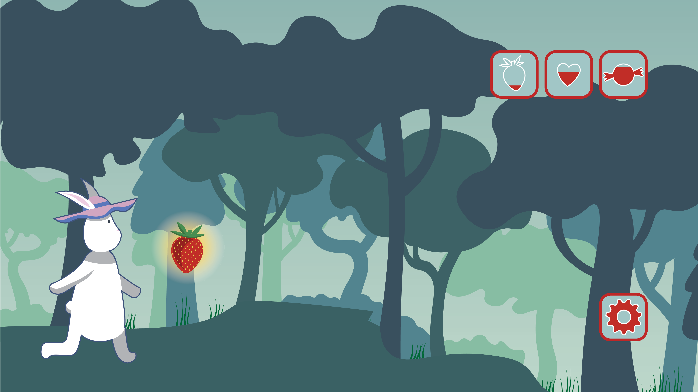
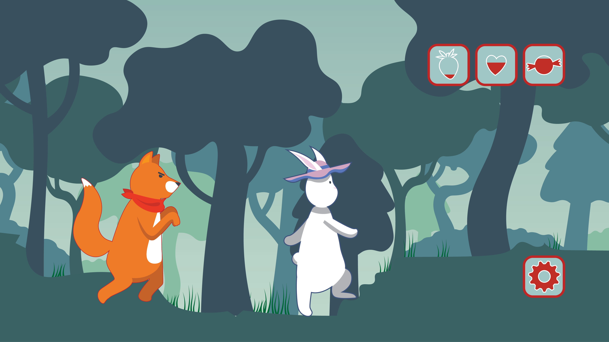
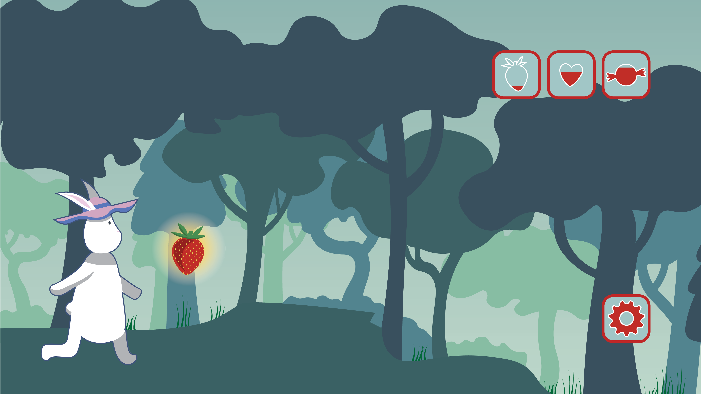
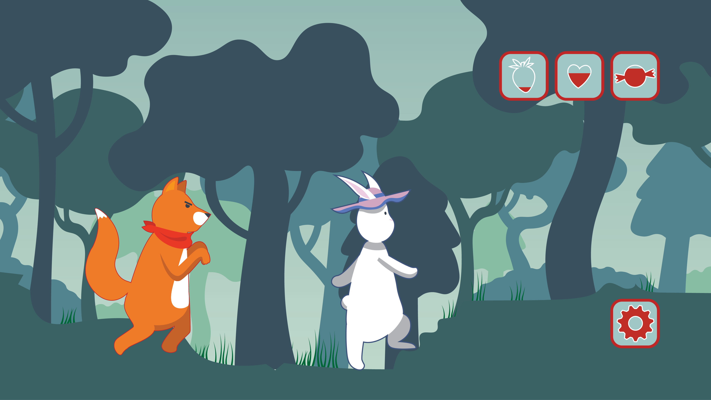
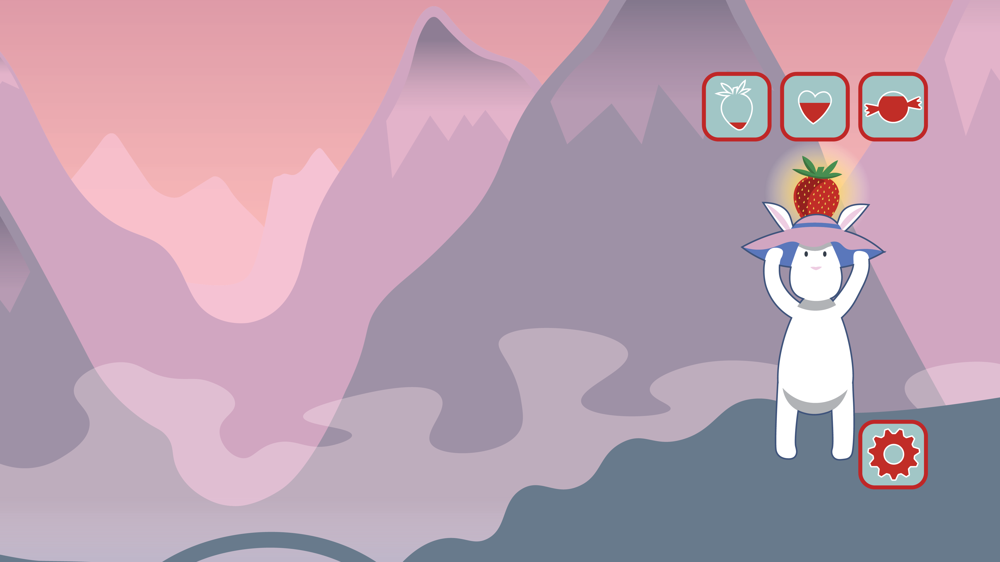
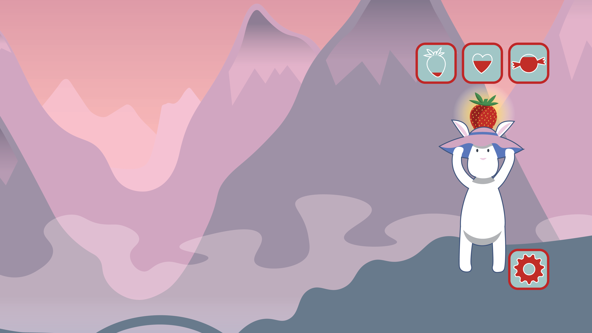
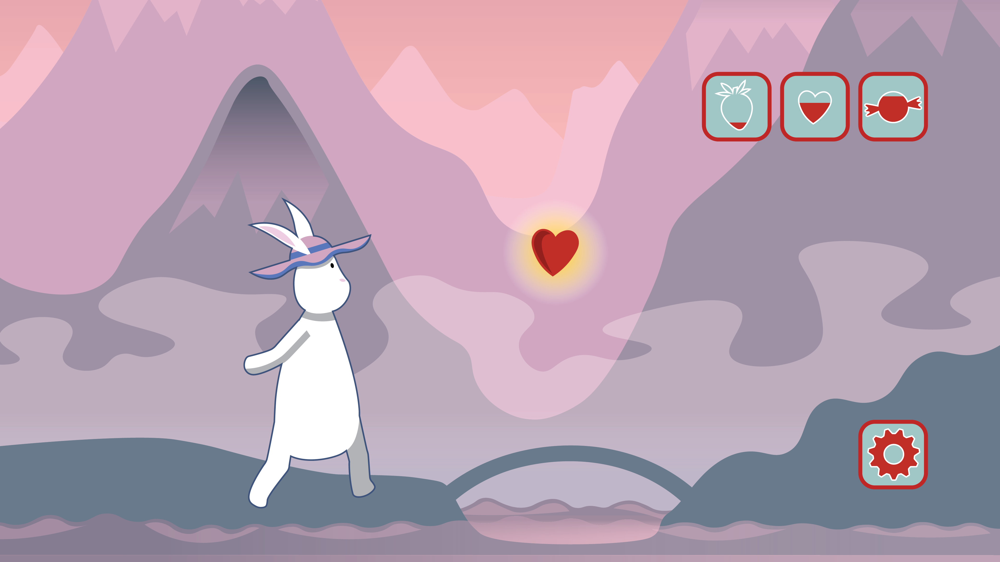
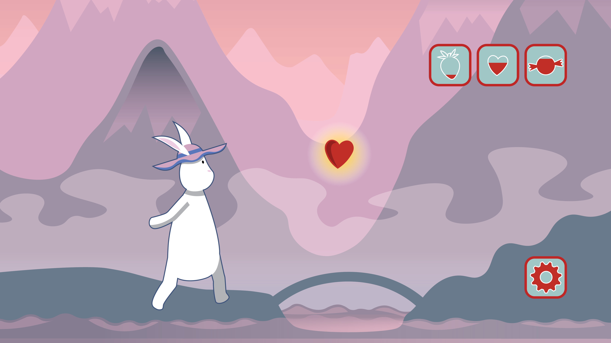
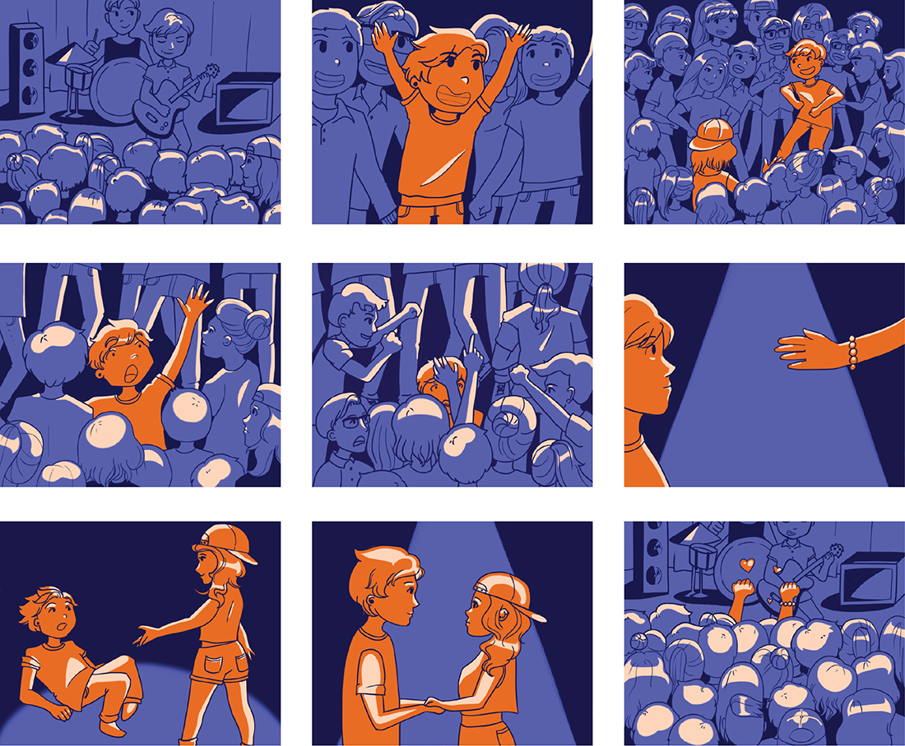
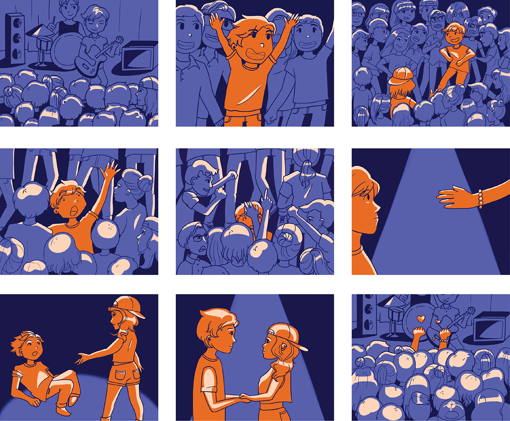

Games People Play
In this project, we were given four prompts from which to choose. We then created mock-ups of an iPhone game including characters, two environments, actions, and interface. Each illustration was created with Adobe Illustrator.
 



 

 



 
